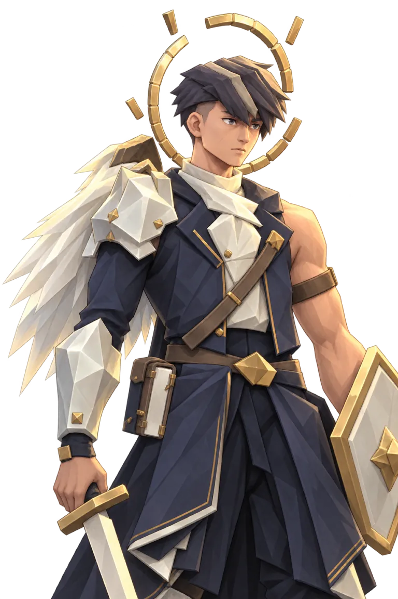
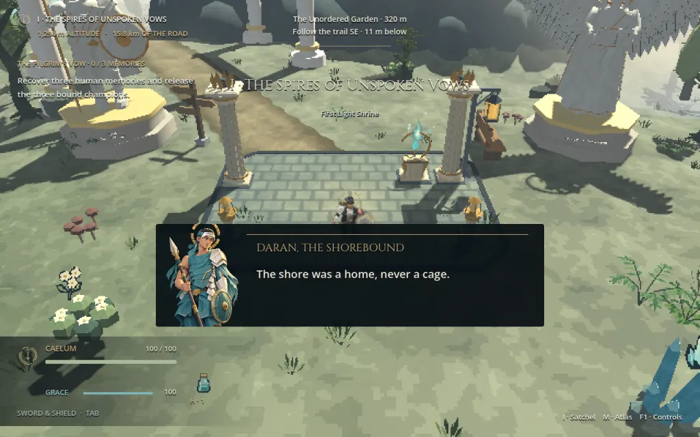
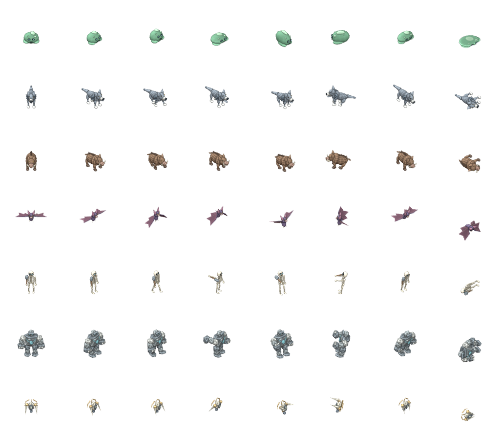

DOWNFALL · Character and creature design ·
A face behind the armor. A blade without a hand.
Caelum, Daran, Maelis and Raigen now have neutral, hurt and recovered-memory portrait studies. An original blade reliquary joins the regional creature set with an editable Blender source and frame-sampled attack art.
The portraits and dialogue screen below are generated design studies with editable web text. The playable world now uses a brief hurt-to-memory portrait card when a champion is released. The reliquary sheet is rendered from the project's Blender source; this page does not represent a new story chapter.
01 / Visual novel direction
Emotion at the moment memory returns.
Select a character, then change the expression. Hurt briefly recoils; the memory state lifts into relief. The motion is restrained and respects reduced-motion settings. The dialogue words outside the champion release lines are preview copy.

CAELUM · THE UNBOUND
I will choose a finite life, even if Heaven calls that a fall.
These twelve portrait states follow the existing Blender character identities. They are concept PNGs in the project; this page serves small WebP copies totaling about 1.8 MiB with the UI and creature reviews.

02 / Original 3D creature
The blade reliquary.
An empty celestial casket suspends two blades around a living core. Its light move points both edges into a narrow thrust; its red heavy opens them into a wider strike. A Blender-authored source drives eight facing directions and seven actions, with 16 loop frames or 24 one-shot frames per direction. The attacks retain explicit preparation, contact and recovery phases in Godot.

Three regional color variants appear in the iron, knights and storms pools. The regional smoke run passed 413 checks with zero failures, including atlas loading, the separate red heavy attack and bounded shared sprite memory. The world smoke run passed 89 checks, including the new release card.